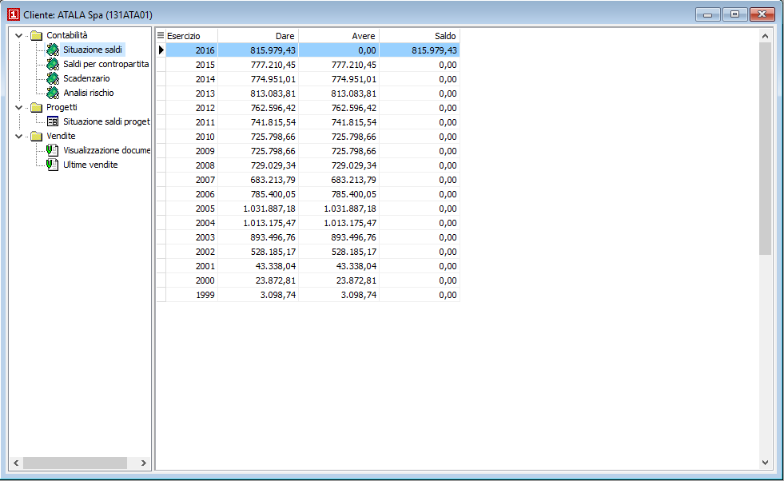
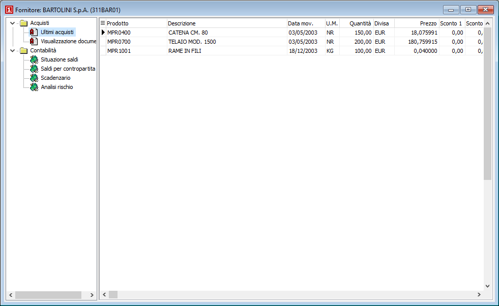
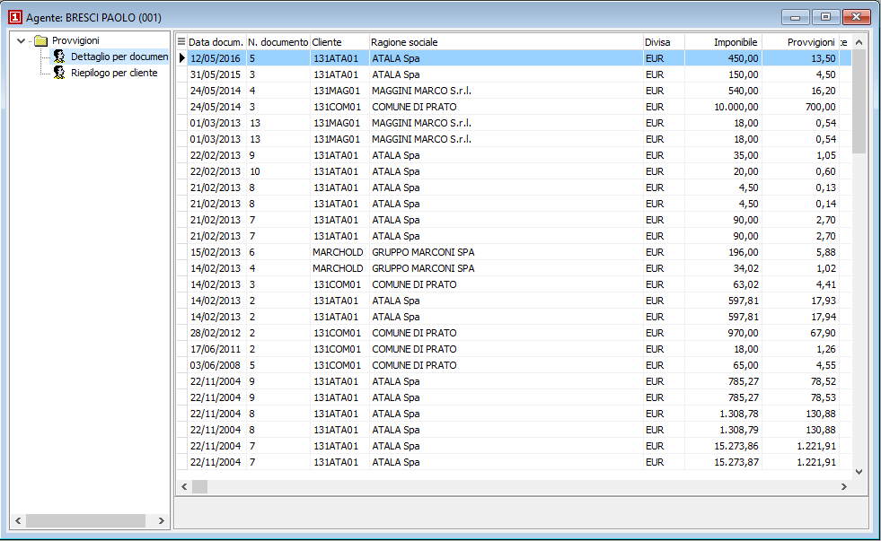
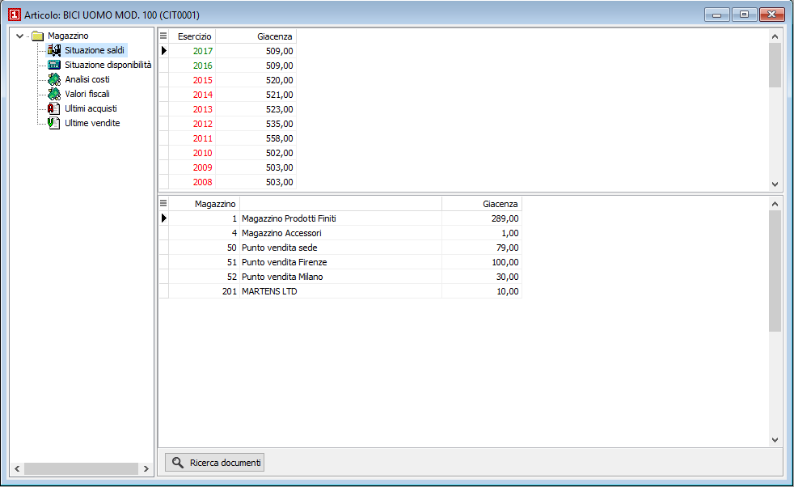
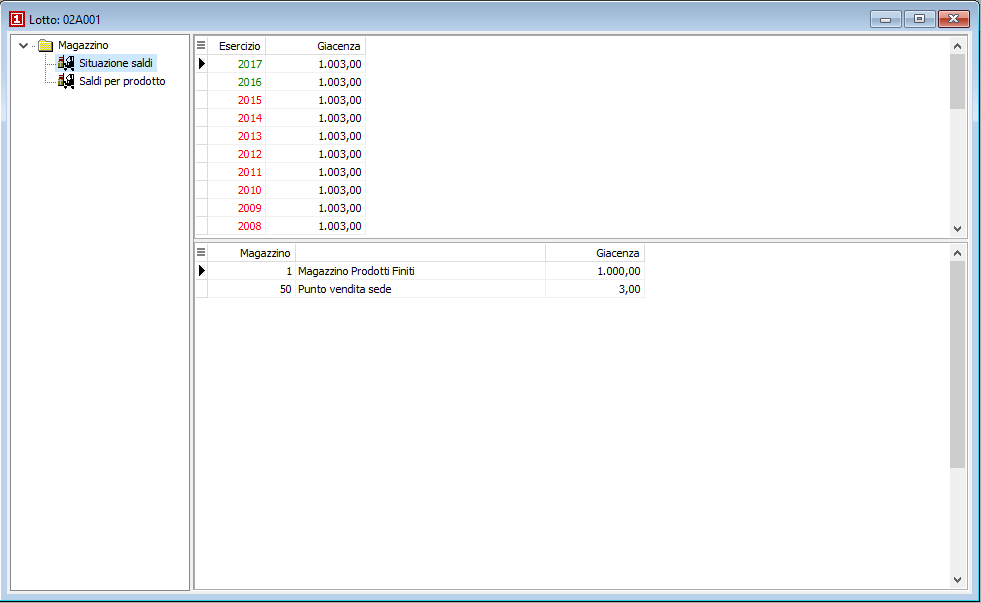

Navigazione tabelle
Il modulo risponde alle esigenze di analisi veloce dei dati legati ad uno specifico elemento di una qualsiasi tabella dell’applicativo. La tecnologia introdotta consente di realizzare e collegare a qualsiasi anagrafica dell’applicazione un menù (richiamabile sia su click di bottone che da tastiera) contenente apposite analisi dedicate. Il menù di analisi è disponibile in tutte le parti dell’applicazione in cui la ricerca associata al campo è richiamata (ad esempio il menù di navigazione relativo all’anagrafica clienti è disponibile in tutti i punti in cui l’anagrafica cliente è presente). Di fatto rappresenta un importante metodo di estensione delle informazioni legate al record utilizzabile in tutta l’applicazione.
Le funzioni presenti possono essere personalizzate ed è possibile crearne anche di nuove utilizzando le stesse metodiche utilizzate nella realizzazione delle funzioni standard.
Per tutte le analisi è normalmente prevista la visualizzazione dei dati in griglia e quindi è prevista l’esportazione dei dati presentati (in Excel o in appunti).
Le funzioni di navigazione realizzate sono riferite alle anagrafiche clienti, fornitori, agenti, articoli, lotti e sono richiamabili tramite il bottone , presente nella barra degli strumenti, o tramite il tasto funzione CTRL+D.
Clienti

Sono state realizzate le seguenti funzioni:
• Situazione saldi: consente la consultazione dei saldi contabili di ciascun esercizio (tenendo conto degli eventuali esercizi aperti); attraverso il doppio clic sulla griglia di analisi è possibile accedere direttamente all’analisi del sottoconto per l’esercizio richiesto.
• Saldi per contropartita: risponde all’esigenza di conoscere relativamente al cliente quali sono le contropartite di ricavo movimentate.
• Scadenzario: visualizza la situazione corrente delle partite da saldare; attraverso il doppio click sulla griglia è possibile accedere alla manutenzione delle scadenze del cliente stesso.
• Analisi rischio: visualizza l’elenco dei documenti che compongono il rischio corrente (suddivisi fra ordini clienti, DDT da fatturare, fatture da contabilizzare, scadenze da saldare); attraverso il doppio click sulla griglia consente l’accesso al documento corrispondente (per le scadenze da saldare è richiamata la manutenzione scadenze). Per ogni elemento è possibile visualizzare i dettagli (righe ordine da evadere, righe DDT da fatturare, righe fattura, singole rate con il proprio saldo).
• Situazione saldi progetti (disponibile solo se attivo il modulo Progetti/Commesse): consente la visualizzazione della situazione corrente dei progressivi dei progetti assegnati al cliente; attraverso il doppio click sulla griglia si accede alla manutenzione del progetto stesso.
• Visualizzazione documenti: consente la visualizzazione di tutti i documenti presenti (distinti fra offerte clienti, ordini clienti, DDT e fatture); per ciascun tipo di documento è possibile impostare un filtro sullo stato. Di ogni documento è possibile ottenere l’analisi flussi e, se attivo il modulo di archiviazione documentale, l’immagine archiviata del documento stesso; attraverso il doppio click sulla griglia è possibile accedere al documento.
• Ultime vendite: visualizza l’elenco dei prodotti venduti al cliente e per ciascun prodotto indica l’ultima vendita (quantità, prezzo e sconti); tramite il doppio click sulla griglia si accede direttamente alla manutenzione dell’articolo trattato.
Fornitori

• Ultimi acquisti: visualizza l’elenco dei prodotti acquistati dal fornitore e per ciascun prodotto indica l’ultimo acquisto (quantità, prezzo e sconti); tramite il doppio click sulla griglia si accede direttamente alla manutenzione dell’articolo trattato.
• Visualizzazione documenti: consente la visualizzazione di tutti i documenti presenti (distinti fra offerte, ordini , DDT, fatture e documenti del c/to lavoro a loro volta suddivisi tra ordini, rientri e fatture); per ciascun tipo di documento è possibile impostare un filtro sullo stato. Di ogni documento, eccetto per i documenti del c/to lavoro, è possibile ottenere l’analisi flussi; se attivo il modulo di archiviazione documentale, per tutti i documenti è possibile ottenere l’immagine archiviata del documento stesso; attraverso il doppio click sulla griglia è possibile accedere al documento.
• Situazione saldi: consente la consultazione dei saldi contabili di ciascun esercizio (tenendo conto degli eventuali esercizi aperti); attraverso il doppio clic sulla griglia di analisi è possibile accedere direttamente all’analisi del sottoconto per l’esercizio richiesto.
• Saldi per contropartita: risponde all’esigenza di conoscere relativamente al fornitore quali sono le contropartite di costo movimentate.
• Scadenzario: visualizza la situazione corrente delle partite da saldare; attraverso il doppio click sulla griglia è possibile accedere alla manutenzione delle scadenze del fornitore stesso.
• Analisi rischio: visualizza l’elenco dei documenti che compongono i saldi del fornitore corrente (suddivisi fra ordini in corso, DDT/rientri da fatturare, fatture da contabilizzare, scadenze da saldare); attraverso il doppio click sulla griglia consente l’accesso al documento corrispondente (per le scadenze da saldare è richiamata la manutenzione scadenze). Per ogni elemento è possibile visualizzare i dettagli (righe ordine da evadere, righe DDT/rientri da fatturare, righe fattura, singole rate con il proprio saldo).
Agenti

Sono disponibili due analisi relative alle provvigioni assegnate all’agente (analitica per singola fattura e riepilogativa per cliente).
Articoli

Sono state realizzate le seguenti funzioni:
• Situazione saldi: visualizza per esercizio/magazzino l’andamento della giacenza dell’articolo; tramite il doppio click sulla griglia è visualizzata l’analisi movimenti per l’articolo e/o il magazzino selezionato.
• Situazione disponibilità: visualizza le giacenze alla data corrente e le disponibilità nel tempo dell’articolo; è possibile ottenere facilmente il dettaglio per magazzino e se l’articolo gestisce varianti, lotti e ubicazioni anche il dettaglio in base agli elementi selezionati. La visualizzazione della disponibilità può essere ottenuta in forma grafica (vista ad albero) oppure in forma di elenco (vista in griglia). Il doppio click sulla colonna consente la visualizzazione del dettaglio degli elementi che compongono il valore di sintesi.
• Analisi costi: a seconda che siano attivate o meno le valorizzazioni visualizza la situazione dei costi derivanti dalle valorizzazioni (costo ultimo, costo medio, costo medio LIFO e FIFO) oppure i movimenti relativi agli ultimi costi (per default 10) leggendo direttamente i movimenti di magazzino.
• Valori fiscali: visualizza la situazione LIFO/FIFO dell’articolo.
• Ultimi acquisti: presenta l’elenco dei fornitori da cui l’articolo è stato acquistato e per ciascun fornitore presenta l’ultimo acquisto (quantità e prezzo);
• Ultime vendite: presenta l’elenco dei clienti cui l’articolo è stato venduto e per ciascun cliente presenta l’ultima vendita (quantità e prezzo);
Lotti

Sono state realizzate le seguenti funzioni:
• Situazione saldi: visualizza per esercizio/magazzino l’andamento della giacenza del lotto; tramite il doppio click sulla griglia viene visualizzata l’analisi movimenti per l’articolo e/o il magazzino selezionato.
• Saldi per prodotto: sulla falsariga dell’analisi precedente visualizza la situazione del lotto per prodotto/magazzino
• Analisi costi: visualizza i movimenti relativi agli ultimi costi (per default 10) leggendo direttamente i movimenti di magazzino. L'analisi costi è presente solo se gestito il costo medio/ultimo per singolo lotto.